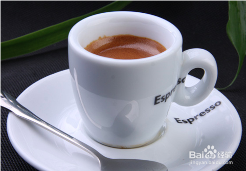
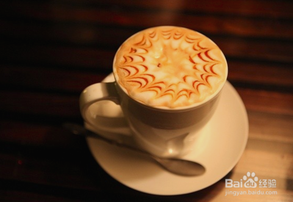
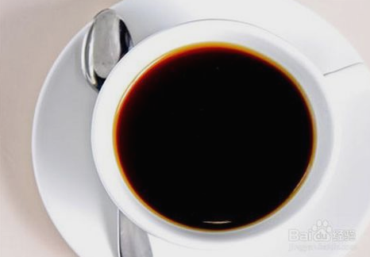
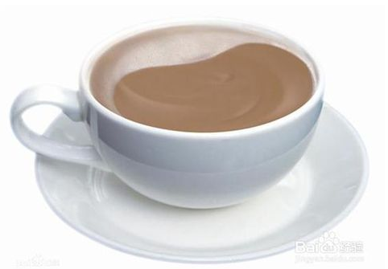

咖啡是用经过烘焙的咖啡豆制作出来的饮料，与可可、茶同为流行于世界的主要饮品。
咖啡树是属茜草科常绿小乔木，日常饮用的咖啡是用咖啡豆配合各种不同的烹煮器具制作出来的， 而咖啡豆就是指咖啡树果实里面的果仁，再用适当的方法烘焙而成，一杯标准的咖啡品尝起来的 味道不应该是苦涩的，一名合格的咖啡师在制作咖啡时会严谨的进行每一步操作，最后为客人呈 上的咖啡在味觉上会呈现出不同程度的甜度、酸度、醇厚度或是干净度。
“咖啡”一词源自希腊语“Kaweh”，意思是“力量与热情”。咖啡树是属茜草科常绿小乔木，日常饮用的咖啡是用咖啡豆配合各种不同的烹煮器具制作出来的 ，而咖啡豆就是指咖啡树果实内之果仁，再用适当的烘焙方法烘焙而成。在世界各地，人们越来越爱喝咖啡。随之而来的“咖啡文化”充满生活的每个时刻。 无论在家里、还是在办公室、或是各种社交场合，人们都在品着咖啡、它逐渐与时尚、现代生活联系在一起。咖啡树原产于非洲埃塞俄比亚西南部的高原地 区。据说一千多年以前一位牧羊人发现羊吃了一种植物后，变得非常兴奋活泼，进而发现了咖啡。还有说法称是因野火偶然烧毁了一片咖啡林，烧烤咖啡的 香味引起周围居民注意。当地土著人经常把咖啡树的果实磨碎，再把它与动物脂肪掺在一起揉捏，做成许多球状的丸子。这些土著部落的人将这些咖啡丸子 当成珍贵的食物，专供那些即将出征的战士享用。直到11世纪左右，人们才开始用水煮咖啡做为饮料。13世纪时，埃塞俄比亚军队入侵也门，将咖啡带到了 阿拉伯世界。因为伊斯兰教义禁止教徒饮酒，有的宗教界人士认为这种饮料刺激神经，违反教义，曾一度禁止并关闭咖啡店，但埃及苏丹认为咖啡不违反教义， 因而解禁，咖啡饮料迅速在阿拉伯地区流行开来。咖啡Coffee这个词，就是来源于阿拉伯语Qahwa，意思是“植物饮料”，后来传到土耳其，成为欧洲语言中这 个词的来源。咖啡种植，制作的方法也被阿拉伯人不断地改进而逐渐完善。17世纪咖啡的种植和生产一直为阿拉伯人所垄断。当时主要被使用在医学和宗教上， 医生和僧侣们承认咖啡具有提神、醒脑、健胃、强身、止血等功效；15世纪初开始有文献记载咖啡的使用方式，并且在此时期融入宗教仪式中，同时也出现在 民间做为日常饮品。因伊斯兰教严禁饮酒，因此咖啡成为当时很重要的社交饮品。1570年，土耳其军队围攻维也纳，失败撤退时，有人在土耳其军队的营房中 发现一口袋黑色的种子，谁也不知道是什么东西。一个曾在土耳其生活过的波兰人，拿走了这袋咖啡，在维也纳开了第一家咖啡店。16世纪末，咖啡以“伊斯兰 酒”的名义通过意大利开始大规模传入欧洲。相传当时一些天主教人士认为咖啡是“魔鬼饮料”，怂恿当时的教皇克莱门八世禁止这种饮料，但教皇品尝后认为可 以饮用，并且祝福了咖啡，因此咖啡在欧洲逐步普及。起初咖啡在欧洲价格不菲，只有贵族才能饮用咖啡，咖啡甚至被称为“黑色金子”。直到1690年，一位荷 兰船长航行到也门，得到几棵咖啡苗，在印度尼西亚种植成功。1727年荷属圭亚那的一位外交官的妻子，将几粒咖啡种子送给一位在巴西的西班牙人，他在巴 西试种取得很好的效果。巴西的气候非常适宜咖啡生长，从此咖啡在南美洲迅速蔓延。因大量生产而价格下降的咖啡开始成为欧洲人的重要饮料。
浓缩咖啡（Espresso)，属于意式咖啡，就是我们平常用咖啡直接冲出来的那种，味道浓郁，入口微苦，咽后留香。适合上班族。

马琪雅朵（Machiatto），在浓缩咖啡中加上两大勺奶泡就成了一杯马琪雅朵。玛奇朵在意大利文里是印记、烙印的意思，所以
象征着甜蜜的印记。

美式咖啡（Americano），是最普通的咖啡，属于黑咖啡的一种。在浓缩咖啡中直接加入大量的水制成，口味比较淡，咖啡因含量较高。

白咖啡（Flat white），是马来西亚的特产，白咖啡的颜色并不是白色，但是比普通咖啡更清淡柔和，白咖啡味道纯正，甘醇芳香。

德国人发明的冲煮方法。简单的说就是把咖啡磨粉后，放在一个漏斗里或者再加层滤纸，上面浇上热水（理想水温90C到95C之间）， 由于地球引力作用，咖啡就从底下流出来。咖啡的量通常是7~10克粉可以做大约120ml的一杯。虹吸壶（Syphon）坊间咖啡馆最普 及的咖啡煮法之一。原理：在酒精灯的燃烧下，下层容器中的水温达到92℃时，水流被吸到有咖啡粉末的上层容器中，通过浸泡、搅 拌后，制成的咖啡再原路返回。研磨度： 比粉状略粗，接近特粒细砂糖。虹吸式煮法带有一种化学实验室的感觉。有人说因为它能 萃取出咖啡中最完美的部分。摩卡壶（Moka Pot）摩卡壶基本原理利用加压的热水快速通过咖啡粉萃取咖啡液。最早的摩卡壶是意 大利人Alfonso Bialetti 在1933年制造的，他的公司Bialetti一直以生产这种咖啡壶而闻名世界。摩卡咖啡壶在欧洲使用比较普遍。 摩卡壶分为上下两部分，水放在下半部分煮开沸腾产生蒸气压力；滚水上升，经过装有咖啡粉的过滤壶；当咖啡流至上半部时，将火关 小，如果温度太高会使咖啡产生焦味。
1、水位：使用温水，水位在安全阀下0.5厘米位置。安全阀在遇到下壶压力过高时会自动泄压，以防止出现安全事故，水位如果高过安全阀， 安全阀的作用就不能正常发挥。 2、咖啡粉：咖啡粉采用中细粒度，装满粉槽，装粉的时候适当振动粉槽让咖啡粉均匀分布，装满以后，用手指轻轻按压表面，使粉更密实一些。 比利时皇家咖啡壶（Balancing Syphon） 比利时皇家咖啡壶 比利时皇家咖啡壶(5张) 兼有虹吸式咖啡壶和摩卡壶特色的比利时壶，演出过程充满跷跷板式趣味。它结合了数种自然的力量：火、蒸汽、压力、重力，这些使得比利 时皇家咖啡壶的操作感觉更具可看性。 法式滤压壶 简称法压壶，是一种同时具备冲茶器功能的咖啡壶。原理：用浸泡的方式，通过水与咖啡粉全面接触浸泡的焖煮法来释放咖啡的精华。适用咖啡： 浓淡口味均可的咖啡粉。研磨度：粗颗粒状。 缺点：由于金属滤网对细粉无法彻底的过滤，咖啡豆需要粗研磨，咖啡粉颗粒变粗，导致大量内容物无法萃取。而长时间浸泡又会萃取过渡，苦味 ，涩味，杂味纷纷涌出，因此咖啡口感稍逊一筹。 电动式咖啡机 一般市面上常见的有美式咖啡滴漏机、意大利式蒸汽咖啡机。美式滴漏咖啡机的价格与虹吸壶不相上下，适合中度或偏深度烘焙的咖啡，研磨颗粒略 细，口味偏苦涩。它通过电力将水煮沸后浸泡，这样做的黑咖啡最简单，但由于用沸水制作，口感稍逊一筹。用意大利式蒸汽咖啡机冲泡的咖啡比较 浓，温度也比较高，口味比美式滴漏机冲泡的咖啡要重。 意式蒸汽咖啡壶是种通过高压高温让蒸汽快速通过咖啡粉萃取咖啡的机器，煮咖啡的最佳 温度在90度-98度之间，意式咖啡机温控做得相当好。家用的意式咖啡机往往还带着一支打奶泡的嘴，做卡布奇诺；另外往往还有将杯子温热的功能。
在餐后饮用的7咖啡，一般都是用袖珍型的杯子盛出。这种杯子的杯耳较小，手指无法穿出去。但即使用较大的杯子，也不要用手指穿过杯耳再端杯子。 咖啡杯的正确拿法，应是拇指和食指捏住杯把儿再将杯子端起。
给咖啡加糖时，砂糖可用咖啡匙舀取，直接加入杯内；也可先用糖夹子把方糖夹在咖啡碟的近身一侧，再用咖啡匙把方糖加在杯子里。如果直接用 糖夹子或手把方糖放入杯内，有时可能会使咖啡溅出，从而弄脏衣服或台布。
咖啡匙是专门用来搅咖啡的，饮用咖啡时应当把它取出来。不要用咖啡匙舀着咖啡一匙一匙地慢慢喝，也不要用咖啡匙来捣碎杯中的方糖。
喝着各式各样的咖啡，悠闲自在的听会音乐吧，下面是我们的歌单.
the end